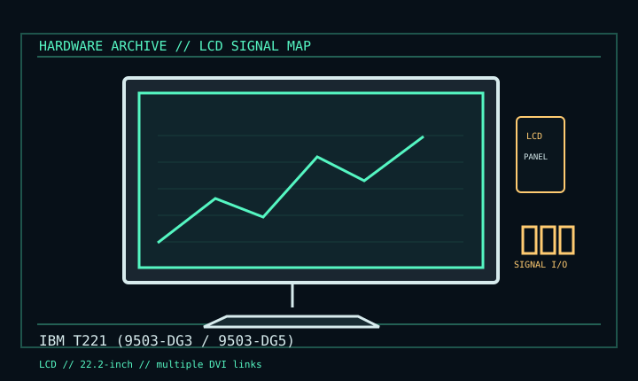

[ INDIVIDUAL COMPONENT // DISPLAYS ]
IBM T221 (9503-DG3 / 9503-DG5)
22.2-inch ultra-high-resolution workstation LCD, early 2000s. LCD

IDENTIFICATION: Verify the complete model/revision on the rear label. Specifications are tied to the cited manual/specification; variant-dependent values are qualified rather than generalized.
Specifications
| Catalog subcategory | Lcd Displays |
|---|---|
| Exact product/family | IBM T221 (9503-DG3 / 9503-DG5) |
| Era | 22.2-inch ultra-high-resolution workstation LCD, early 2000s. |
| Panel / image | 22.2-inch LCD; 3840 × 2400 native, approximately 204 ppi. |
| Refresh | Panel rates vary: DG3 41 Hz; DG5 41–48 Hz. Host update and panel refresh are not interchangeable figures. |
| Signal | Multiple single-link DVI inputs are tiled. One DVI feed at native resolution is severely bandwidth-limited; multi-link setup is required for usable motion. |
| Power / mechanical | 100–240 V AC, 50/60 Hz; maximum 150 W; 478 × 299 mm active area; tilt stand. |
Revision, signal & host compatibility
Identify DG3 vs DG5 and EDID/firmware. T221 is not plug-and-play 4K over one DVI cable: multi-link configuration requires compatible GPU outputs, driver/timing setup, cables and monitor setup. A passive adapter cannot raise source bandwidth.
Match source signal type, sync/timing, connector pinout, bandwidth and power path to this exact display. Physical connector fit alone does not establish electrical or timing compatibility.
Preservation & repair notes
Retain link cables, labels and configuration/EDID data. Test each path and document host feed rate separately from panel refresh. Avoid panel pressure; follow correct service material.
Record model suffix, serial/date label, accessories, image condition, configuration, source document and repair history. CRT high-voltage, LCD backlight and OLED panel risks require appropriate service training and the correct manual.
Manufacturer manuals & references
- IBM T221 Installation & System AttachmentIBM installation reference for multi-link and host setup.
- IBM 9503 T221 User ManualUser manual for modes, operation and model specification.